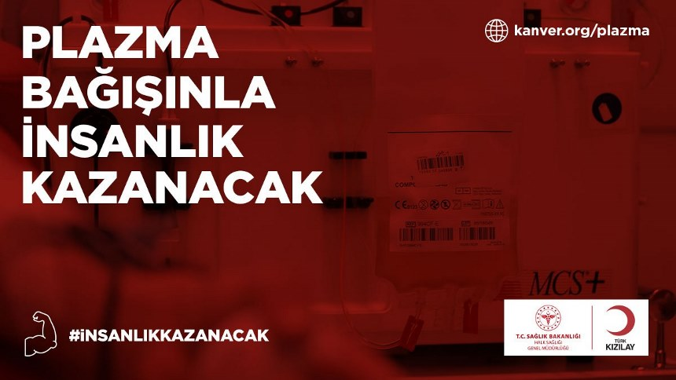

Uluslararası Kızılhaç ve Kızılay Hareketi
Uluslararası Kızılhaç ve Kızılay Hareketi, görevi din, inanç, dil, ırk, toplumsal sınıf veya politik görüş farkı gözetmeksizin insan hayatı ve sağlığını korumak, insan varoluşunun saygı görmesini sağlamak, insanların acı çekmesini önlemek ve acılarını dindirmek olan uluslararası bir insani harekettir.
Hareket, üç farklı kurumsal oluşumu içinde taşımaktadır.
Uluslararası Kızılhaç Komitesi (ICRC), Kızılhaç –Kızılay hareketinin kurucu organıdır. İnsani görevi sadece savaş ve iç-şiddet mağdurlarının yaşamını ve onurunu korumaktır. 1863'de Cenevre, İsviçre'de kurulmuştur.
Uluslararası Kızılhaç ve Kızılay Dernekleri Federasyonu (IFRC), hareket içinde bulunan 188 Kızılhaç ve Kızılay Derneği’nin koordinasyonunu sağlamakla görevli birliktir.
Ulusal Kızılhaç ve Kızılay dernekleri, hareketin temel birimleridir. Dünyanın hemen hemen her ülkesinde bulunur.
Uluslararası Kızılhaç Kızılay Hareketi'nin kurucusu Henry Dunant'ın doğum günü olan 8 Mayıs günü 1948 yılından bu yana “Dünya Kızılhaç ve Kızılay Günü” olarak kutlanır.[9]
Kızıl Haç
1863'teki Cenevre Konferansı'da resmen hareketin amblemi olarak kabul edilmiştir. Bu amblemin tarafsız bir ülke olan İsviçre'nin bayrağındaki renklerin değiştirilmesi ile oluşturulduğu, dini bir anlam içermediği iddia edilir.[4]
Kızılay
İçinde haç bulunduğu için Kızılhaç amblemini kullanmak istemeyen Osmanlı Devleti, 93 Harbi döneminde amblem olarak Kızılay figürünü kullanacağını ilan etmiştir. Kızılay figürü, Osmanlı bayrağındaki renklerin ters çevrilmesi ile oluşturulmuştu. Kızılay ambleminin resmen kabul edilmesi 1929’da gerçekleşti. Kızılay amblemi, günümüzde 33 devletteki ulusal dernek tarafından kullanılır.
Kızılay, 1868 yılında bir grup idealist hekimin çabaları ile savaş alanında yaralanan askerlere ayrım gözetmeksizin yardım etmek arzusundan doğmuştur.
- 11 Haziran 1868 tarihinde "Osmanlı Yaralı ve Hasta Askerlere Yardım Cemiyeti" adıyla kurulan Kızılay,
- 1877'de "Osmanlı Hilali Ahmer Cemiyeti",
- 1923'de "Türkiye Hilaliahmer Cemiyeti",
- 1935'te "Türkiye Kızılay Cemiyeti" ve
- 1947'de "Türkiye Kızılay Derneği" adını almıştır. Kuruluşa "KIZILAY" adını büyük önder Atatürk vermiştir.
Türk Kızılayı faaliyetleri arasında
- Afet Yönetimi
- Kan Hizmetleri
- Uluslararası Yardımlar
- Sosyal Hizmetler
- Sağlık Hizmetleri
- İlk Yardım Eğitimi
- Gönüllü Yönetimi
- Göç ve Mülteci Hizmetleri
- Maden Suyu Satışı
- Çadır ve Tekstil Üretimi yer almaktadır.
Kan hizmetleri gönüllük esasına dayanan ve bu kapsamda Kan Bağışı, İmmün plazma Bağışı, Aferez Bağışı ve Kök hücre Bağışı hizmetlerini içermektedir.
KAN BAĞIŞI
Form doldurma , kayıt, kan sayımı, tansiyon, nabız, ateş ve vücut ağırlığı ölçümü, sonrasında doktor tarafından yapılan sınırlı fizik muayene sonrası kan bağışında bulunmanız ilk olarak size daha sonrada ihtiyaç sahibine herhangi bir zarar vermeyecekse kan bağışı işlemine yönlendirilirsiniz.
Kan bağışı işlemi
Kan bağışı işlemi için özel olarak tasarlanmış kan alma yataklarına alınırsınız.
Kan bağışı işlemi;
• Konusunda eğitim almış tecrübeli flebotomistler tarafından gerçekleştirilir.
• Kullanılan tüm malzemeler tek kullanımlık ve sterildir.
• Kan alımı işlemi en uygun bölge olan dirsek çukurunda gerçekleşir.
• Kan alma işlemi yaklaşık 4-8 dk sürer.
• Her kan bağışında sadece 1 ünite kan bağışlanmaktadır. 1 ünite kan yaklaşık 450 ml ±%10 ‘dir
Gerçekleşen kan bağışı günlük hayatınızı etkilemeyecek miktardadır. (vücuttaki kanın 1/13’ü )
İMMUN PLAZMA BAĞIŞI
COVID-19 tanısı konulan, tedavi sürecinin ardından iyileşen hastalardan Türk Kızılay tarafından toplanan kan plazmasının kritik durumda olan hastalarda kullanılması yoluyla gerçekleştirilen tedavi yöntemidir.
Kimler plazma bağışında bulunabilir?
Ulusal mevzuata göre tam kan bağışı şartlarını ve COVID-19 İmmün Plazma Tedarik ve Klinik Kullanım Rehberi gerekliliklerini sağlayan bağışçılar,
18-60 yaş arası (19 yaşından gün almış, 61 yaşından gün almamış) bağışçılar,
Erkek ya da gebe kalmamış (düşük ve kürtaj dahil) kadın bağışçılar,
Daha önce kendilerine kan transfüzyonu yapılmamış bağışçılar,
COVID-19 hastalığına yakalanmış ve sonrasında iyileşmiş bireyler,
Bağışçı adayının COVID-19 hastalığı tanısı aldığına dair laboratuvar test sonucu olmalıdır VE
Bununla birlikte;
- Klinik olarak (Ateş, öksürük, nefes darlığı, boğaz ağrısı, baş ağrısı, kas ağrıları, tat ve koku alma kaybı veya ishal belirti ve bulguları gibi) iyileşmenin üzerinden en az 14 gün geçmiş olması, VE
- Boğaz ve burun bölgesi dediğimiz nazofarenks sürüntü örneklerinden çalışılmış en az 2 adet PCR test sonucu negatifliğinin (testlerden birisi son 48 saat içerisinde yapılmış olmalı) olması gerekmektedir.
- Klinik iyileşmenin üzerinden 28 gün geçti ise test negatifliği şartı aranmaz.
Bağışçı adaylarının hastalık dönemine ait kayıtları eksiksiz, takip edilebilir ve dökümante olmalıdır.
AFEREZ BAĞIŞI
Aferez; kan bağışçısının kanında bulunan ve hastanın ihtiyacı olan kan bileşeninin (eritrosit, trombosit veya plazma) alınması ve diğer bileşenlerin kan bağışçısına geri verilmesi işlemidir.
Türk Kızılay Kan Bağış Merkezleri trombosit aferezi yapmaktadır.
Trombosit aferez işlemi, kan bağışçı ile aferez cihazı arasında, hasta için gereken kan bileşenin elde edilmesini sağlayan bir kan bağışı türüdür.
Cihaz bağışçının kanını küçük miktarlarda alarak gerekli olan trombositi ayırır ve kanın trombosit dışında kalan kısmı bağışçıya geri verir.
Damar yapısı uygun olan, son 5 gün içinde aspirin veya türevi bir ilaç ve 48 saat içinde Non-steroid anti inflamatuar bir ilaç (bazı ağrı kesici ve ateş düşürücü ilaçlar) kullanmayan; kan bağışında bulunabilecek herkes aferez bağışçısı olabilir.
KÖK HÜCRE BAĞIŞI
TÜRKÖK
TÜRKÖK, gönüllü bağışçılara ait doku grubu antijeni bilgilerinin depolandığı Kemik İliği Bankasının (KİB) oluşturulması ve kök hücre nakli ile ilgilenen merkezler arasında koordinasyonun sağlanması amacı ile kurulmuştur. Gönüllü kök hücre bağışçı adaylarının kazanılması Türk Kızılay tarafından sağlanmaktadır
Kök Hücre
Yaşam boyu kendi kendini yenileme ve farklı, tamamen olgun hücrelere dönüşebilme kapasitesine sahip hücrelerdir. İhtiyaç olduğu zaman kendilerinden sonraki hücrelere farklılaşarak, hücrelerin gelişimini, olgunlaşmasını ve çoğalmasını sağlarlar.
Erişkin kök hücrelerden olan hematopoetik kök hücreler;
-Tüm kan hücrelerine farklılaşabilirler.
-Kemik iliği, kan ve göbek kordonundan elde edilirler.
-Uygun koşullarda dondurularak canlılığını korurlar.
Damar yolu ile verildiğinde kemik iliğine yerleşir ve hematopoezi (kan hücrelerinin oluşumu) başlatırlar.
HLA, bir kişinin dokusunun diğer bir kişiye ne kadar uyduğunu gösterir. HLA doku tipi kalıtsal olup, kişinin kardeşleri varsa ikizi en iyi eşleşme ihtimali olan kişilerdir. Hastanın ailesi içerisinde eşleşme bulunamaz ise tarama sizin gibi akraba olmayan kişiler arasında yapılmaya başlanır. Bir bağışçının, bir hasta için uygun olduğunun belirlenmesi, HLA doku tiplerinin eşleşmesi ile olur. Bağışçı ve hastanın HLA sonuçlarının yüksek oranda eşleşmesi, en iyi nakil sonucunun alınmasına neden olur.
- Kök Hücre Tedavisi Uygulanan Hastalıklar
- Kemik iliği kanserleri
- Lenfoma
- Hodgkin lenfoma
- Lösemi
- Anemi
- Akdeniz anemisi
- Organ kanserleri
- Plazma hücre hastalıkları
- Kemik iliği yetmezliği
- Multiple myeloma
- Kalıtsal ve doğumsal kan hastalıkları
- İmmün yetersizliğe bağlı gelişen hastalıklar
- Kalıtsal metabolik hastalıklar
Bağışçı :
1-18-50 yaş aralığında olmalıdır.
2- Sağlıklı bir kişi olmalıdır. (Hepatit B, Hepatit C ve Sifiliz hastalığı geçirmemiş olan, kronik hastalığı bulunmayan, kanser, HIV ( AIDS ) tanısı almamış olan kişiler)
Bağış Yöntemleri:
1. Periferik Kök Hücre Toplama Yöntemi: En sık tercih edilen yöntemdir, bağışçının damar yapısının uygunluğunun değerlendirilmesi gerekmektedir.
Bu yöntemde 4-5 gün süre ile günde 2 kez deri altı G-CSF (Granülosit Koloni Uyarıcı Faktör) uygulaması yapılır. Bunun amacı kemik iliğinde yerleşik olarak bulunan kök hücrelerin kana geçmesini sağlamaktır. Son dozdan 2 saat sonra bir kolunuzdan steril bir iğne yardımı ile alınan kan, aferez cihazında ilerler, 4-5 saatlik bir aferez prosedürü sonunda kök hücrelerin diğer kan bileşenlerinden ayrılması sağlanır. Bu kök hücresi ayrılmış kan, diğer kolunuzdan tekrar vücudunuza verilir.
Eğer damar yapınız uygun değil ise, alternatif olarak santral yoldan (boyun damarınız) lokal anestezi altında bir kateter takılarak kök hücreleriniz toplanır. Kateter sıklıkla 4 saat süreyle takılı kalır, ancak bazı durumlarda ikinci gün tekrar kök hücre toplanması gerekebilir ve bu süre 24 saate uzayabilir.
2. Kemik İliği Toplanması: Bu işlemi tercih ettiyseniz; işlemden yaklaşık 1 hafta önce 1 ünite kanınız alınarak, tekrar size verilmek üzere saklanır. Gerekli sağlık kontrolleri ve genel anestezi alma durumu değerlendirilip tetkikler yapılıp, hastaneye yatışınız gerçekleştirilir. Ameliyathane ortamında, 1 veya 2 saat kadar genel anestezi altında özel bir iğne yardımı ile kalça kemiğinizin arkasından (pelvis kemiği) ilerlenerek kök hücreleriniz toplanır.